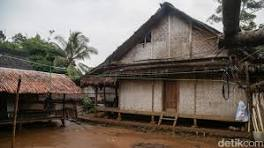

Sejarah Singkat
Suku Baduy diperkirakan sudah ada sejak zaman kerajaan Sunda kuno, seperti Kerajaan Pajajaran (abad ke-16). Mereka diyakini sebagai keturunan masyarakat Sunda asli yang menolak pengaruh luar, terutama setelah runtuhnya Pajajaran akibat ekspansi Kesultanan Banten. Untuk mempertahankan tradisi leluhur, mereka menarik diri dari pergaulan luar dan menetap di kawasan yang sekarang disebut Kanekes. Pemerintah kolonial Belanda mencatat keberadaan mereka sejak abad ke-17, tetapi tidak banyak mencampuri kehidupan masyarakat Baduy karena mereka dianggap sebagai komunitas yang tidak mengancam kepentingan kolonial. Hingga kini, suku Baduy masih menjalankan aturan adat yang ketat, seperti menolak penggunaan teknologi modern, listrik, dan kendaraan bermotor.
Pengertian Baduy Luar
Baduy Luar adalah salah satu kelompok dalam masyarakat suku Baduy yang tinggal di sekitar wilayah Baduy Dalam di Kabupaten Lebak, Banten. Mereka masih mempertahankan banyak tradisi dan adat istiadat suku Baduy, tetapi sudah mulai berinteraksi dengan dunia luar, termasuk dalam hal berpakaian, penggunaan teknologi, dan perdagangan.
Ciri-ciri Baduy Luar:
- Berpakaian lebih bebas.
- Lebih terbuka terhadap teknologi.
- Interaksi dengan masyarakat luar.
- Tidak menggunakan alat transportasi.
- Bercocok tanam secara tradisional
- Menjalankan aturan adat yang ketat

Pengertian Baduy Dalam
Baduy Dalam adalah kelompok masyarakat adat suku Baduy yang menjalankan kehidupan dengan aturan adat yang sangat ketat dan menolak pengaruh dari dunia luar. Mereka tinggal di wilayah yang lebih dalam di Pegunungan Kendeng, Kabupaten Lebak, Banten, dan mempertahankan gaya hidup sederhana serta harmonis dengan alam.
Ciri-ciri Baduy Dalam:
- Menolak teknologi modern.
- Berpakaian serba putih tanpa kancing.
- Interaksi dengan masyarakat luar .
- Menjadi perantara.
Sebutan Ketua Adat
Ketua adat suku Baduy disebut Pu'un.
Peran dan Tanggung Jawab Pu'un:
- Pemimpin spiritual dan adat
- Mengatur kehidupan sosial
- Menjaga keseimbangan alam
- Menentukan kebijakan pertanian
Kampung Adat Suku Baduy Dalam
- Cikeusik
- Cikertawana
- Cibeo
Kampung Adat Suku Baduy Luar
- Kaduketug
- Kadukolot 
- Cikadu
- Gajeboh
- Marengo

Aturan Kampung Adat
Kampung adat Baduy memiliki aturan ketat yang diwariskan secara turun-temurun dan dipegang teguh oleh masyarakatnya. Aturan ini dikenal sebagai "pikukuh", yaitu pedoman hidup yang harus ditaati agar keseimbangan alam dan kehidupan tetap terjaga.
Aturan Utama:
- Larangan Penggunaan Teknologi Modern.
- Tidak Boleh Mengubah Alam Secara Berlebihan.
- Larangan Menikah dengan Orang di Luar Suku Baduy
- Tidak Boleh Menggunakan Transportasi Modern
- Tidak Boleh Bersekolah Formal
- Hidup Sederhana dan Tidak Boleh Pamer Kekayaan
Agama Atau Kepercayaan
Masyarakat suku Baduy menganut kepercayaan Sunda Wiwitan, yaitu sistem kepercayaan asli leluhur mereka yang berakar pada penghormatan terhadap alam dan leluhur.
Prinsip Kepercayaan Sunda Wiwitan:
- Menjaga keseimbangan alam
- Menyembah Sang Hyang Kersa
- Memegang teguh Pikukuh
- Menghormati leluhur dan roh penjaga alam
Lokasi
Kampung adat Baduy berada di Desa Kanekes, Kecamatan Leuwidamar, Kabupaten Lebak, Banten. Desa ini terletak di kaki Pegunungan Kendeng.
Struktur Kampung Adat
- Tata Letak Kampung.
- Rumah Adat Baduy
- Bangunan Penting dalam Kampung Baduy
- Pembagian Wilayah
- => Kampung adat Baduy umumnya berada di lereng bukit dan dikelilingi oleh hutan yang mereka lindungi.
- => Rumah-rumah dibangun menghadap ke arah yang sama dan tertata rapi tanpa pagar pembatas.
- => Tidak ada jalan beraspal atau kendaraan, semua akses dilakukan dengan berjalan kaki.
- => Rumah Baduy terbuat dari bahan alami seperti bambu, kayu, dan ijuk.
- =>Dibangun di atas tiang (panggung) untuk menghindari kelembapan dan gangguan hewan liar.
- => Atap menggunakan daun kirai atau rumbia tanpa paku, hanya diikat dengan tali rotan.
- => Tidak ada sekat permanen di dalam rumah, ruang dalam digunakan secara fleksibel.
- => Sasaka Pusaka Buana – Rumah adat utama yang menjadi tempat berkumpul pemimpin adat dan warga untuk membahas urusan adat.
- => Balai Kampung – Digunakan untuk musyawarah atau kegiatan bersama warga.
- => Lumbung Padi (Leuit) – Tempat penyimpanan hasil panen yang menjadi simbol ketahanan pangan suku Baduy.
- => Baduy Dalam (Cikeusik, Cikertawana, Cibeo) → Wilayah yang paling sakral, dihuni oleh masyarakat yang paling ketat menjalankan adat.
- => Baduy Luar → Berfungsi sebagai zona peralihan, dihuni oleh mereka yang masih memegang adat tetapi lebih terbuka terhadap dunia luar.

Fakta Unik
Suku Baduy memiliki banyak fakta unik yang membuat mereka berbeda dari masyarakat pada umumnya. Berikut beberapa di antaranya:
- Tidak Menggunakan Teknologi Modern.
- Tidak Boleh Menggunakan Sabun dan Pasta Gigi.
- Wajib Berjalan Kaki ke Mana Pun.
- Tidak Boleh Memotret atau Merekam di Wilayah Baduy Dalam.
- Tidak Ada Kriminalitas.
- Memiliki Bahasa Unik.
- Tidak Menerima Bantuan dari Pemerintah.